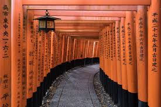

Featured Attractions
-

Attraction 1
Kinkakuji (金閣寺, Golden Pavilion) is a Zen temple in northern Kyoto whose top two floors are completely covered in gold leaf. Formally known as Rokuonji, the temple was the retirement villa of the shogun Ashikaga Yoshimitsu, and according to his will it became a Zen temple of the Rinzai sect after his death in 1408. Kinkakuji was the inspiration for the similarly named Ginkakuji (Silver Pavilion), built by Yoshimitsu's grandson, Ashikaga Yoshimasa, on the other side of the city a few decades later.
-

Attraction 2
Fushimi Inari Shrine (伏見稲荷大社, Fushimi Inari Taisha) is an important Shinto shrine in southern Kyoto. It is famous for its thousands of vermilion torii gates, which straddle a network of trails behind its main buildings. The trails lead into the wooded forest of the sacred Mount Inari, which stands at 233 meters and belongs to the shrine grounds.